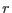
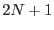
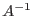
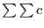
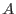
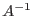
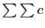
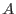

smoothstyle=`simple', convolverstyle=`tophat'.
The convolving kernel approximates a filled circle, viz:
The radius  is read from the parameter width. The convolver array is again square and of side length , where  equals the integer part of . If normalize=`yes',  is set from  as before, otherwise  = 1.
equals the integer part of . If normalize=`yes',  is set from  as before, otherwise  = 1.